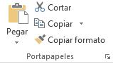
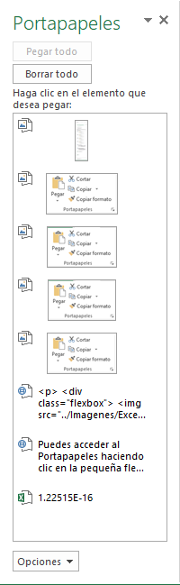

Ingresar, editar y borrar datos
Al comenzar un documento nuevo en Excel, la celda activa es la A1. Si
escribimos un número o un texto, estamos ingresando datos en ella.
Así de sencillo resulta registrar datos. Vamos a familiarizarnos con
esta tarea y a aprender, además, a modificar el contenido presente o a
eliminarlo, según nuestras necesidades
Ingreso
Para asegurarnos de ingresar datos en una celda es indispensable
que esta se encuentre seleccionada como activa.
Por lo tanto, con el
puntero del mouse nos posicionamos sobre ella y hacemos un clic para
que quede seleccionada y activa. Un recuadro más grueso diferencia
la celda activa del resto. Podemos trasladarnos desde una celda activa
a otra usando las flechas del teclado. Una vez en la posición deseada,
escribimos el dato que queremos ingresar.
Durante el proceso de ingreso, los caracteres que vamos escribiendo
se muestran en la celda activa y también, en la Barra de fórmulas, que
se encuentra en la parte superior de la hoja de cálculo.
Al terminar de
ingresar el dato, presionamos la tecla ENTER. También podemos pulsar
TAB, movernos con las flechas del cursor a otra posición, presionar
en la Barra de fórmulas el botón Introducir o hacer clic con el mouse en
otra celda. Cualquiera de estas alternativas hará que el dato quede
almacenado en la celda respectiva.
Si aún no hemos validado el dato y
presionamos la tecla ESC, cancelaremos lo que estábamos ingresando,
y la celda quedará tal como estaba antes de nuestra intervención.
Modificar
Para modificar un dato ingresado, podemos sobrescribirlo o editarlo.
La primera opción ocurre cuando comenzamos a escribir en una celda
que ya contiene información. En ese caso, los nuevos datos reemplazarán
por completo el contenido anterior.
Por ejemplo, si en la celda A1
tenemos la palabra Inicio, nos situamos otra vez
sobre ella, escribimos Final y presionamos ENTER,
el texto original será reemplazado por el nuevo.
La opción de edición nos permite modificar
una porción del contenido de la celda
seleccionada sin tener que borrar o sobrescribir
el dato anterior.
Si hacemos doble clic en la celda
que queremos modificar, habilitamos el modo
Edición y entonces, podemos trasladarnos con las
flechas izquierda y derecha sobre el contenido
de la celda, ya sea un texto, un número o una
fórmula. Al borrar los caracteres con SUPR o BACKSPACE, o insertar
otros nuevos entre dos existentes o al final de la cadena, podemos
rescribir la porción de una fórmula, un texto o un número. Una vez
finalizado el proceso, validamos los cambios con ENTER.
Truco: Otra manera de editar una celda es presionar la tecla F2 sobre
la celda activa. En este caso también podemos presionar ESC para
cancelar la edición y volver al contenido original de la celda sin tener
en cuenta los cambios introducidos.
Tambien podemos utilizar la barra de formulas ya que cuando se está tecleando,
el cuadro de texto de edición en la ventana de Excel
presenta un aspecto como este:
Donde:
-
La lista desplegable
(Cuadro de nombres) despliega una lista de nombres o funciones que se pueden añadir a la celda o emplearse
para acceder a su posición.
-
El botón
 (Cancelar) se emplea para anular la introducción o modificación del dato que se ha estado escribiendo
en la celda.
(Cancelar) se emplea para anular la introducción o modificación del dato que se ha estado escribiendo
en la celda.
-
El botón
 (Introducir) aceptará el dato que se haya estado escribiendo en la celda, añadiéndolo a la hoja de
cálculo activa
(Introducir) aceptará el dato que se haya estado escribiendo en la celda, añadiéndolo a la hoja de
cálculo activa
-
El botón
 (Insertar función) permite añadir una función de Excel
(Insertar función) permite añadir una función de Excel
Observaciones:
- En modo Edición, las flechas del cursor no nos permiten trasladarnos
hacia otras celdas; solo podremos movernos dentro del contenido de la
celda actual para hacer las modificaciones necesarias.
- Tengamos presente que cuando
estamos modificando el contenido de una celda que contiene una
fórmula de cualquier tipo, la sintaxis de la fórmula será visible tanto
en la Barra de fórmulas como en la celda, pero no su resultado. Una
vez finalizado el proceso, en la Barra de fórmula seguiremos viendo la
sintaxis y en la celda, el resultado.
Borrar
Borrar el contenido de una o varias celdas es algo sencillo, y hay
diferentes formas de hacerlo. Primero debemos seleccionar la celda o
el rango que queremos borra y luego:
- Presionamos la tecla SUPR, las celdas seleccionadas quedarán vacías.
- Otra posibilidad es pulsar el botón derecho del mouse sobre las celdas seleccionadas y, en el menú
que se despliega, elegir la opción Borrar contenido.
- También, desde la opción Borrar del grupo Modificar, en la pestañaInicio, podemos utilizar
Borrar todo, que elimina el contenido, los comentarios y el formato de
la celda; o seleccionar Borrar contenido, que no borrará los formatos
ni los comentarios de la selección. La opción Borrar formato elimina
solo el formato de la celda, pero no el contenido; en tanto que Borrar
comentarios elimina solo los comentarios.
Grupo portapapeles
Es el primero de todos los grupos en la ficha Inicio. Aunque su uso es muy frecuente pues resulta una herramienta
bastante util casi nunca se accede a estos comandos a través del grupo en la barra superior de la pantalla, sino a
través de combinaciones de teclas en el teclado.

Este es el grupo que permite copiar o cortar celdas y pegarlas, con varias opciones alternativas
a cada una de estas acciones.
Copiar (Ctrl + c) y Pegar (Ctrl + v)
Cuando queremos duplicar el contenido de una celda en otra celda distinta seleccionamos la celda origen como celda
activa, pulsamos el comando “Copiar” o la combinación de teclas Ctrl + c de manera simultánea, seleccionamos la celda
de destino como celda activa y pulsamos el comando “Pegar” o la combinación de teclas Ctrl + v de manera simultánea.
Observación:
Cuando copiamos el contenido de una celda en otra celda, debemos tener presente las siguientes consideraciones:
- Si el contenido de la celda de origen es un texto, entonces la celda destino tendrá ese mismo texto.
- Si el contenido de la celda origen era una fórmula con todos los números introducido a mano, entonces la celda destino
también tendrá esa misma fórmula exactamente igual.
- Sin embargo, si la celda origen es una formula con referencias
a otras celdas (de la misma hoja o de distinta), la celda de destino no hará referencia a las mismas celdas, sino a las
celdas en la posición relativa al desplazamiento.
Cortar (Ctrl + x)
Cortar funciona exactamente igual que copiar, con la diferencia que una vez que se pegan las celdas cortadas, las celdas de
origen se borran.
El atajo de teclado es la combinación de teclas Ctrl + x de forma simultánea.
Copiar formato
Funciona de manera similar a copiar, pero tan solo copia el formato de las celdas seleccionadas, no su contenido.
No tiene atajo de teclado, y una vez pulsado el comando el formato se pega en la celda destino que se seleccione,
no hay que pulsar ningún comando más.
Truco: Una funcionalidad importante de este comando, es pulsar doble click sobre el botón.
Al hacer esto seleccionamos de forma permanente el formato a copiar, pegándolo en todas las celdas que seleccionemos,
sin tener que pulsar sobre el botón varias veces si queremos copiar un formato a varias celdas.
Otras opciones de copiado
Copiar las celdas seleccionadas como una imagen
El comando Copiar tiene alternativamente la opción de copiar las celdas seleccionadas como una imagen.
Al hacer esto y usar pegar en este u otro programa se pegan las celdas copiadas (en contenido y forma) en forma de imagen,
como si hubiéramos hecho una captura de pantalla, sin poder modificar estos datos de ninguna forma (más que con un programa
de edición de imágenes)
Otras opciones de pegado
Al pegar unas celdas podemos utilizar distintos tipos de Pegar. Podemos acceder a las opciones desde el comando
del grupo Portapapeles, pulsando en la flecha hacia abajo justo debajo del botón Pegar, o podemos pegar las
celdas de manera normal y en la esquina inferior izquierda nos aparece un botón en el que pone (Ctrl).
Si hacemos clic, aparece el siguiente desplegable:
En orden de izquierda a derecha y de arriba abajo las opciones son estas:
| Opcion |
Resultado |
| Pegar |
Pega las celdas seleccionadas, la opción estándar al pegar, la que se realiza al Crtl + v. |
| Fórmulas |
Pega solo las fórmulas, sin formato de ningún tipo, moviendo las referencias a otras celdas como
acabamos de ver. |
| Formato de fórmulas y números |
Pega las fórmulas y su formato de contenido, no el formato de la celda. |
| Mantener formato de origen |
Pega el formato de las celdas originales y su contenido. |
| Sin bordes |
Pega todo excepto los bordes. |
| Mantener ancho de columnas de origen |
Pega todo y fija el ancho de la columna donde esté la celda destino
igual al ancho de la columna de la celda original |
| Transponer |
Pega las filas en forma de columna y las columnas en forma de fila. Las referencias que tengan
las celdas también se modifican de la misma manera. |
| Valores |
Pega el resultado de las fórmulas de origen, sin fórmula ni formato. |
| Formato de valores y números |
Es como pegar valores, pero también mantiene el formato del contenido de las
celdas de origen. |
| Formato de valores y origen |
Es como pegar valores, pero mantiene por completo el formato de las celdas de origen. |
| Formato |
Es lo mismo que utilizar el comando copiar formato. |
| Pegar vínculo |
Excel crea vínculos hacia las celdas origen de manera que cualquier cambio hecho en ellas
se vea reflejado en las celdas destino.
(celda destino = celda origen). No copia formatos. |
| Imagen |
Al igual que copiar imagen, pega la selección como una imagen no modificable por el programa |
| Imagen vinculada |
Una mezcla entre los dos anteriores, pega la selección como una imagen, pero los
cambios realizados en las celdas originales se reflejan en la imagen pegada. |
Copiar celdas utilizando el Portapapeles
Con el Portapapeles podremos pegar hasta 24 objetos almacenados en él con sucesivas copias.
Esta barra tiene el aspecto de la figura de la derecha.
Puedes acceder al Portapapeles haciendo clic en la pequeña flecha que aparece en la parte superior derecha de la sección
Portapapeles de la pestaña Inicio.

En esta ultima ventana podremos observar a los objetos que tenemos en el portapapeles.
- Para pegar uno de ellos, hacer clic sobre el objeto a pegar.
- Para pegar todos los elementos a la vez, hacer clic sobre el botón
- Si no nos interesa ver la Barra del Portapapeles, hacer clic sobre su botón cerrar botón cerrar del panel
o volver a pulsar el botón con el que lo mostramos.
Podemos también elegir si queremos que aparezca automáticamente esta barra o no a la hora de
copiar algún elemento. Para ello: Hacer clic sobre el botón

- Seleccionar la opción Mostrar automáticamente el Portapapeles de Office, para activar en caso de querer
visualizarla automáticamente, o para desactivarla en caso contrario.
Al desplegar el botón de opciones también podemos activar algunas de las siguientes opciones descritas a continuación:
-
Si activamos la opción Recopilar sin mostrar el Portapapeles de Office copiará el contenido del portapapeles sin mostrarlo.
- Si activamos la opción Mostrar el icono del Portapapeles de Office en la barra de tareas aparecerá en la barra de tareas del sistema
(junto al reloj del sistema) el icono del portapapeles
- Si activamos la opción Mostrar estado cerca de la barra de tareas al copiar mostrará en la parte inferior derecha de la ventana
un mensaje informándote del número de elementos copiados
Mover/desplazar celdas
Mover celdas utilizando el portapapeles
La operación de mover desplaza una celda o rango de celdas a otra posición. Cuando utilizamos
el portapapeles entran en juego dos operaciones Cortar y Pegar. La operación de Cortar desplazará
las celdas seleccionadas al portapapeles de Windows y Pegar copia la información del portapapeles
a donde nos encontramos situados.
Cuidado, ya que al pegar unas celdas sobre otras no vacías, se borrará el contenido de éstas
últimas, no podemos utilizar el pegado especial visto en el tema anterior.
Mover celdas utilizando el ratón
Desplazar un rango de celdas a otra posición dentro de la misma hoja
- Seleccionar las celdas a mover.
- Situarse sobre un borde de la selección.
- El puntero del ratón se convertirá en una flecha
blanca apuntando hacia la izquierda y una cruz de 4 puntas, tal como esto

- Pulsar el botón del ratón y manteniéndolo pulsado, arrastrarlo hasta donde
quieres mover el rango.
- Observa como aparece un recuadro que nos indica dónde se situará el rango en caso de
soltar el botón del ratón
- Suelta el botón del ratón cuando hayas llegado a donde quieres dejar las celdas.
Mover algún rango de celdas a otra hoja
- Seleccionar las celdas a mover.
- Situarse sobre un borde de la selección.
- El puntero del ratón se convertirá en una flecha blanca apuntando hacia la izquierda y
una cruz de 4 puntas, tal como esto
- Pulsar el botón del ratón y sin soltarlo pulsar la tecla ALT, después pasar el puntero del
ratón sobre la pestaña de la hoja a la cual quieras mover el rango de celdas que hayas
seleccionado, verás que esta hoja pasa a ser la hoja activa.
- Una vez situado en la hoja deseada soltar la tecla ALT.
- Después, soltar el puntero del ratón una vez situado en el lugar donde quieres dejar las celdas.
Autorelleno
Esta función de Excel detecta automáticamente una serie de datos y la continua a lo largo de todas las celdas que
se le indique. Por ejemplo, con escribir en dos celdas consecutivas 1 y 2 respectivamente, con autorrelleno podemos
continuar la serie poniendo 3, 4, 5… sin tener que escribirlos manualmente. Lo mismo ocurre con números salteados,
fechas, y cualquier serie que Excel pueda identificar como tal.
Al tener una o varias celdas seleccionadas, observamos en la esquina
inferior derecha de la selección un pequeño cuadrado verde separado
levemente del resto del recuadro, que se denomina controlador de
relleno.
Si posicionamos el puntero del mouse sobre esta esquina, este
se transformará en una cruz negra más fina que la original, para indicar
que estamos en posición de estirar la selección.
Si pinchamos en ella y arrastramos hacia la derecha o hacia abajo comenzará a actuar el autorrelleno.
Lo mismo ocurre si lo hacemos con una cadena de texto y números:
O con los meses del año:
Si al pinchar en la esquina inferior derecha y arrastrar no funciona el autorrelleno es porque no está en modo
Serie de relleno sino en Copiar celdas. Esto suele ocurrir cuando se intenta hacer una serie con una sola
celda rellena inicialmente. La forma más rápida de cambiar entre estos dos modos es mantener pulsada la tecla Ctrl
mientras se pincha y arrastra.
Controlador de relleno
El controlador de relleno permite repetir los datos de una celda o
crear series de datos. Para repetir un dato introducido en una celda
bastará con escribirlo y arrastrar el controlador de relleno en la
dirección deseada. Por ejemplo, si en la celda A1 escribimos la palabra
Muestra, luego nos posicionamos sobre ella, activamos el puntero
estirar y con el botón principal apretado nos trasladamos cuatro celdas
hacia abajo hasta A5, al soltar el botón del mouse, estas celdas tendrán
la palabra Muestra, igual que A1. Sin embargo, si el contenido inicial
fuese Muestra 1, luego de arrastrar con el puntero estirar, veremos en
las celdas siguientes: Muestra 2, Muestra 3 y así sucesivamente, hasta el
final del área que hemos arrastrado. Esto se debe a que Excel identifica
que el dato lleva un número y en base a ello crea una secuencia.
Para crear series de datos bastará ingresar los dos primeros valores de la
serie y arrastrar el controlador de relleno. En este caso, el programa
reconoce la diferencia entre ambos y la aplica para continuar la
serie. Por ejemplo, si en la celda A1 escribimos el número 40 y en la
celda A2 el número 45, seleccionamos ambos valores y arrastramos
el controlador, Excel seguirá completando las celdas con los valores
50, 55, 60, 65. Esto se debe a que reconoce que entre los dos primeros
valores había 5 unidades de diferencia
Cuando el contenido inicial es un dato de tipo fecha, al arrastrar
con el puntero estirar, en las celdas siguientes veremos cada fecha
incrementada en un día. En caso de que en la columna inmediata,
izquierda o derecha, de la celda que tenemos activa hubiera celdas
consecutivas con contenido, al hacer doble clic sobre el puntero
arrastrar de la celda activa, se completará la serie hasta la celda final
de la última fila que contiene datos adyacentes.
Opciones de autorelleno
Al terminar de arrastrar una serie, abajo y a la derecha del área
resultante aparece un botón, se trata del menú Opciones de autorrelleno.
Cuando presionamos sobre él, se despliegan otras alternativas
destinadas a cambiar el modo en que se completaron los datos:
La forma más precisa de establecer a Excel que queremos hacer al usar la opción de autorrelleno es pulsar en el botón
que aparece abajo a la derecha tras realizar un autorrelleno.

- Copiar celdas: Es como hacer copiar y pegar, pero arrastrando en vez de con el comando. Es decir,
copia las celdas sin completar una serie.
- Serie de relleno: Es el autorrelleno propiamente dicho, completa completa de manera automática la serie según el
criterio utilizado para el cálculo.
- Rellenar formatos solo: copia únicamente el formato de las celdas de
origen en las celdas de destino.
- Rellenar sin formato: completa una serie respetando el formato de las
celdas, es decir, sin modificar su aspecto.
- Relleno rápido: Detecta un patrón que relaciona varias celdas y lo continúa. Por ejemplo, si en la columna
A tienes 10 nombres, en la B 10 apellidos y en la C1 escribes el nombre de A1 y el apellido de B1 todo seguido,
el relleno rápido escribirá en la columna C el nombre y apellido junto de todas las demás filas (casi no se utiliza).
Observación: El menú de autorrelleno permite modificar el modo
en que se comporta el puntero estirar luego de arrastrar una celda o rango
Trucos y atajos
| Atajo |
Resultado |
| Ctrl + D |
Copia sobre la celda seleccionada el contenido de la celda de la derecha. Si está seleccionado un rango copiará a
todo el rango el contenido de la celda o celdas en la columna más a la izquierda de la selección. |
| Ctrl + J |
Igual que lacombinación Ctrl + D , copiando el valor de las celdas superiores a las inferiores. |
| Ctrl + Enter |
Si seleccionamos un rango de celdas y escribimos algo, el contenido aparecerá en la celda superior izquierda.
Si tras esto pulsamos “Ctrl” + “Enter”lo que hayamos escrito se escribirá sobre todas las celdas que tuviéramos
seleccionadas. |
Si lo que escribimos es una fórmula las referencias a otras celdas se moverán como lo harían al copiar y pegar
normalmente.
| Atajo |
Resultado |
| Ctrl + N |
Cambia el estilo de letra de las celdas seleccionadas a negrita. |
| Ctrl + K |
Cambia el estilo de letra de las celdas seleccionadas a cursiva. |
| Ctrl + S |
Cambia el estilo de letra de las celdas seleccionadas a subrayado |
| Ctrl + 5 |
Cambia el estilo de letra de las celdas seleccionadas a tachado. |
| Ctrl + + |
introduce una celda, fila o columna. Si al momento de pulsar esta combinación tenemos seleccionada una celda nos
preguntará si queremos desplazar las celdas hacia abajo o hacia la derecha, o si queremos introducir toda una fila
o columna. Si al momento de pulsar tenemos seleccionada toda una fila o columna directamente introducirá una fila o
columna desplazando las anteriores hacia abajo o derecha respectivamente. |
| Ctrl + - |
elimina una celda, fila o columna. Funciona igual que el anterior comando. |
| “Ctrl” + “↓” “→” “↑” / “←” (flechas del teclado) |
cuando nos estamos moviendo por una tabla, podemos avanzar hasta la última celda con contenido con estos comandos.
Si estamos en la celda superior izquierda y pulsamos “Ctrl” + “↓”, la celda activa se moverá hasta la celda inferior
izquierda de la tabla (si no hay ningún dato en la columna de la selección nos moveremos hasta la última fila de la
hoja, la fila 048.576). Con “Ctrl” + “→” nos moveremos a la derecha del todo, “Ctrl” + “↑” nos lleva arriba y
“Ctrl” + “←” a la izquierda. |
| “Mayús” + “↓” “→” “↑” / “←” (flechas del teclado) |
la tecla “Mayús” o “Shift”, junto con las flechas del teclado, nos permite ir seleccionando un rango de celdas a
la vez que desplazamos la celda activa de posición. Por ejemplo, nuestra celda activa es la A1, pulsamos y mantenemos
la tecla “Shift” y pulsamos “→”, “→”, “↓”, “↓” y soltamos “Shift”, tendremos seleccionado el rango de celdas desde la A1 hasta la C3. |
| “Ctrl” + “Mayús” + “↓” “→” “↑” / “←” |
con esto se suman los efectos de los dos atajos de teclado nombrados anteriormente, por lo que no es difícil averiguar
cuál será el resultado producido: es la forma más rápida de seleccionar todo el rango de una tabla. Para empezar,
nos posicionamos en la celda superior izquierda de una tabla, pulsamos y mantenemos “Ctrl” y pulsamos y mantenemos “Shift”;
ahora pulsamos “↓”, con lo que nos habremos movido a la celda más inferior con datos, seleccionando también todas las celdas
entre medias; a continuación pulsamos “→”, moviéndonos a la celda más a la derecha con datos, y seleccionando también todas
las celdas entre medias, con lo cual ya tenemos toda la tabla seleccionada (soltamos “Ctrl” y “Shift”). |
| “Ctrl” + “,” |
introduce en la celda activa la fecha de hoy. El valor es estático, por lo que si mañana abrimos esta misma hoja seguirá
apareciendo la fecha del día original. |
| “F4” |
repite la última acción realizada. Si por ejemplo acabamos de poner un tipo de letra en una celda y queremos hacer lo
mismo en otra, podemos seleccionar la celda destino y pulsar “F4” |
| “F9” |
actualiza la hoja. Al hacer esto Excel realiza de nuevo todos los cálculos de las fórmulas que hay en la hoja.
La mejor manera de comprobar su funcionamiento es escribir en una celda la función “=aleatorio()”. Esta función pone
en la celda un número aleatorio entre 0 y 1 (con decimales), y el número solo cambia si se vuelve a calcular la hoja
(se puede forzar pulsando F9). |
| “F1” |
el más importante de todos los comandos nombrados, abre la ayuda de Excel. Es imposible conocer todos los
atajos y combinaciones que existen en Excel, ni acordarse de todas las funcionalidades, fórmulas, formatos, etc.
Por eso es importante saber como acceder al menú de ayuda. |
| Pegado especial |
permite realizar operaciones matemáticas sobre una celda o conjunto de celdas utilizando
el valor copiado, como sumar, restar, multiplicar o dividir, entre otros. |
Rangos: Bloques de celda
Existe un modo de referirse a un grupo de celdas contiguas, siempre y cuando
formen un rectángulo de celdas. Para ello, se utiliza la referencia de dos de ellas: la
superior izquierda y la inferior derecha del grupo.
Para referirse al grupo (rango) de celdas basta con escribir la primera, seguida de
dos puntos (:) y, a continuación, escribir la segunda.
Por ejemplo,
en la siguiente imagen puede apreciarse un rango de celdas ocupadas con datos. El rango
comenzaría por la celda cuya referencia es A2 (que es una celda vacia) y terminaría en
K12 (que contiene el dato 100). Para referirse a este rango se indicaría A2:K12.
Observaciones:
- Los rangos pueden recibir un nombre para que no sea
necesario especificar sus referencias constantemente.
- Los rangos se utilizan fundamentalmente en las funciones, ya que, en muchas de
éstas, debe indicarse un rango de celdas que será el grupo de datos que utilice la función.
Nombres para bloques de celdas
A un grupo de celdas (incluso a una sola) se le puede asignar un nombre. Así,
podremos utilizarlo en lugar de las referencias a esas celdas.
Para realizar los trabajos relacionados con el nombre de las celdas se accede al
grupo Nombres definidos de la pestaña Fórmulas en la cinta de opciones: